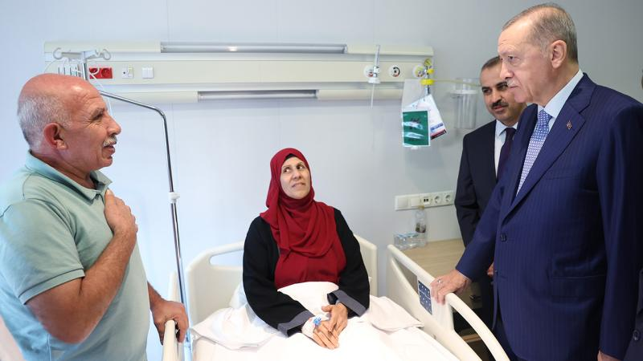
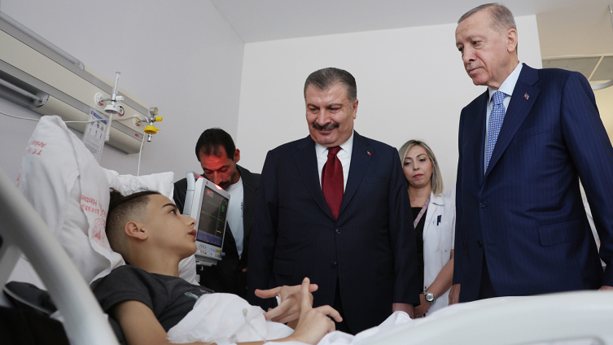

Gazze'den getirilen hastalardan Erdoğan'a teşekkür
Gazze'den Türkiye'ye getirilerek Ankara Bilkent Şehir Hastanesinde tedavi altına alınan Filistinli kanser hastaları ve refakatçileri, kendilerini ziyaret eden Cumhurbaşkanı Recep Tayyip Erdoğan'a teşekkür etti.
Gazze'den çıkarılan bazı kanser hastalarını ve refakatçilerini taşıyan iki uçak, Türkiye'ye geldi.
İsrail'in saldırısı altındaki Gazze'den çıkarılarak, El Ariş Havalimanı'na ambulanslarla götürülen ve Cumhurbaşkanlığına ve Milli Savunma Bakanlığına ait uçaklara yerleştirilen hastaları, Esenboğa Havalimanında sağlık ekipleri karşıladı.
Esenboğa Havalimanı'na inen uçaklardan ambulanslara nakledilen 27 hasta, Bilkent Şehir Hastanesi'ne götürüldü. Şehir hastanesinde tedavi altına alınan hastaların ilk ziyaretçisi ise Cumhurbaşkanı Recep Tayyip Erdoğan oldu.
Hastaların tedavi gördüğü Onkoloji Hastanesi'ne giden Erdoğan'a, Sağlık Bakanı Fahrettin Koca ve Hastane Başhekimi Prof. Dr. Ercan Yeni ile doktorlar eşlik etti.
Hastaları tek tek ziyaret ederek "geçmiş olsun" dileklerini ileten Cumhurbaşkanı Erdoğan, sağlık durumlarına ilişkin bilgi aldı.
Hastalardan Erdoğan'a teşekkür
Filistinli kanser hastaları, kendilerini ziyaret eden Cumhurbaşkanı Recep Tayyip Erdoğan'a teşekkür etti.
Cumhurbaşkanı Erdoğan, kanser hastalarından 17 yaşındaki Mahmud Kadir İbrahim Ebu Neda'yı ziyaret ederek, sağlık durumu hakkında bilgi aldı.
Neda, Filistin'in çok zor bir dönemden geçtiğini, Gazze'de yaşama ümitlerinin kalmadığını belirterek, bütün gelecek planlarının Gazze ile beraber yıkıldığını söyledi.
Gazze'deki Türk Hastanesinin saldırı sonucu yıkıldığını, Gazze'den apar topar ayrılmak zorunda kaldıklarını anlatan Neda, İsrail'in saldırılarında kız kardeşinin de hayatını kaybettiğini ifade etti.
Neda, cep telefonundan Türkiye'den bir şef ile yemek yaptıkları anlara ilişkin fotoğrafı da gösterdi.